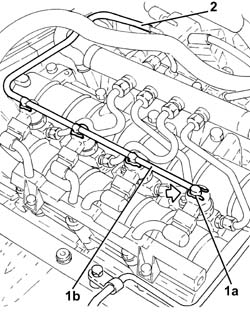
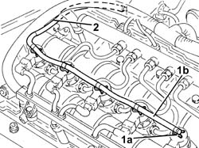

1060F52 Fuel return PIPE from INJECTORS - R.R.
- Path
- Procedures > 10 ENGINE > 1060 DIESEL FUEL INJECTION > 1060F injectors and lines > 1060F52 Fuel return PIPE from INJECTORS - R.R.
- Kind
- repair procedure (removal / refitting; the operation number is the code)
- Applies to
- engines: 1.9 JTD 8v , 1.9 JTD 16v, 2.4 JTD 10v, 2.4 JTD 20v; all production periods
- Interactive page
- https://sloeber94.github.io/elrnDB-a156/en/#/3237806
Applies to: engines: 1.9 JTD 8v , 2.4 JTD 10v; all production periods
 Removing
Removing
 Refitting
RefittingDisconnect the pipe leading from the injectors to the fuel recovery manifold from the fuel return manifold pipe:
Remove the spring clips on the injectors and remove the pipe from the injectors to the fuel recovery manifold.
Applies to: engines: 1.9 JTD 8v , 2.4 JTD 10v; all production periods
Refitting
RemovingFit the pipe from the injectors to the fuel recovery manifold and fix it to the injectors using the spring clips.
Connect the pipe leading from the injectors to the fuel recovery manifold from the fuel return manifold pipe:
Applies to: engines: 1.9 JTD 16v; all production periods
Removing
RefittingProceed with removal 1016A10 sound-proofing cover - r + r .
1. Push clips (1a) by hand and disconnect the pipe from the injectors to the fuel recovery manifold (1b), injectors side and move it aside.
2. Disconnect the pipe from the injectors to the fuel recovery manifold, fuel recovery manifold side and remove it.

Applies to: engines: 1.9 JTD 16v; all production periods
Refitting
RemovingPlace the pipe from the injectors to the fuel recovery manifold in its housing and connect it to the fuel recovery manifold.
Connect the pipe from the injectors to the fuel recovery manifold to the injectors pushing it until the clips can be heard clicking into place.
Proceed with refitting 1016A10 sound-proofing cover - r + r .
Applies to: engines: 2.4 JTD 20v; all production periods
Removing
RefittingProceed with removal 1016A10 sound-proofing cover - r + r .
1. Push clips (1a) by hand and disconnect the pipe from the injectors to the fuel recovery manifold (1b), injectors side.
2. Disconnect the pipe from the injectors to the fuel recovery manifold, fuel recovery manifold side and remove it.

Applies to: engines: 2.4 JTD 20v; all production periods
Refitting
RemovingPlace the pipe from the injectors to the fuel recovery manifold in its housing and connect it to the fuel recovery manifold.
Connect the pipe from the injectors to the fuel recovery manifold to the injectors pushing it until the clips can be heard clicking into place.
Proceed with refitting 1016A10 sound-proofing cover - r + r .